Hello!
I'm a Systems Design Engineering student at the University of Waterloo. I've completed 3 school terms, and am almost done my 3rd co-op term. I love design: user experience, interfaces, web design + development, product design - you name it! I've taken it upon myself to learn as much as possible and am excited to develop a career doing what I'm passionate about. Currently, I'm looking for a co-op job for January-April 2015 (or if you're really thinking ahead, September-December 2015), so let me know if you're interested in hiring me! I'm eager to soak up more knowledge, enhance my abilities, and contribute in any way I can.
Experience
Project Coordinator
CAP Management Services
Jan-Apr '13
For my first co-op term, I went back to Alberta to work for a small project management/civil engineering company. After construction safety training in the main office in Edmonton, I packed my bags and headed to Hanna, a tiny prairie town only known for the birthplace of Nickelback (there's a mural of them on City Hall). CAP's job was to ensure that the piles for the foundation of the transmission towers on the Hanna Region Transmission Development were placed in sturdily. I was the Project Coordinator, managing a team of ten field workers who were performing quality assurance. I had to make sure everyone was where they needed to be to ensure thorough QA, create daily reports and spreadsheets on the status of each tower, and communicate updates with the civil engineers. I also occasionally drove out to site to perform QA myself, gaining experience with construction. My last month was spent back in Edmonton, finishing up document turnover to the client, writing reports, and designing new forms. I learned a lot about how project management works, as well as construction.
Content Developer
Maplesoft
Sept-Dec '13
My second co-op term was spent in Waterloo, working for Maplesoft, who develops a math and graphing software called Maple. They also have a software program called MapleTA, which is used to develop and host math and physics questions for students to solve online. I authored these questions for textbook publishing companies, basing them off of current high school and university textbooks. Each question required a step-by-step solution and needed to have enough variation so that the question is different each time it's opened. To do this, I had to design algorithms so that each step in the solution was correct for every instance. Although MapleTA usually just required free form entry (kind of like Word), I would often have to edit the HTML source code to format the questions correctly. This was where I first started learning HTML and CSS! Also, many of the questions required graphs, which I created using Maple.
User Interface Developer
OMERS
May-Aug '14
I'm currently on the last leg of my work term here in Toronto. It's exciting because I finally have a job doing extensive front-end work! I'm on a team that's developing a new internal software for the customer service department to keep track of customer info and communication history. There's 4 of us on the UI team, making the software look good and easy to use. Each process page has to be styled individually, while still maintaining consistency throughout the whole system. The JavaScript developers use IBM's Process Designer to code in, which makes it easy for them. Unfortunately for us, it spits out extremely messy HTML code, which we can't change. To implement the CSS I have to navigate around the HTML and manipulate the default styling using FireBug. It definitely requires more thinking than the average web styling. I also use Photoshop occasionally to make new icons and buttons. All the work is confidential though, so I can't include it in a web portfolio.
Skills
- Interface Design
- Web Design
- Wireframes
- Personas
- HCI
- Photography
- HTML5
- CSS3
- Bootstrap
- C++
- Photoshop
- Illustrator
- Balsamiq
- AutoCAD
- IBM Process Designer
- Office
- Leadership
- Interpersonal Skills
- Time Management
- Writing Abilities
Portfolio
Projects
An assortment of design projects and websites I've worked on. Always a work in progress!
-
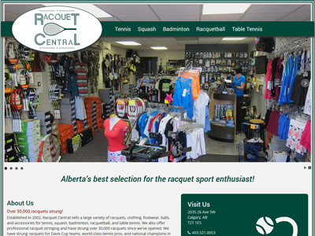
Racquet Central
I created a new website for a Calgary Tennis store using HTML, CSS, and a bit of Javascript.
×Racquet Central
My Uncle owns a tennis store in Calgary. Its website was out of date and definitely needed a refresher to better feature what the store has to offer. I kept the site short and sweet like before, but changed the design, added images, and made it responsive to enhance the experience.
View it live at www.racquetcentral.ca.
Don't feel like clicking on the link? Here's a shot of what it looks like on a desktop.
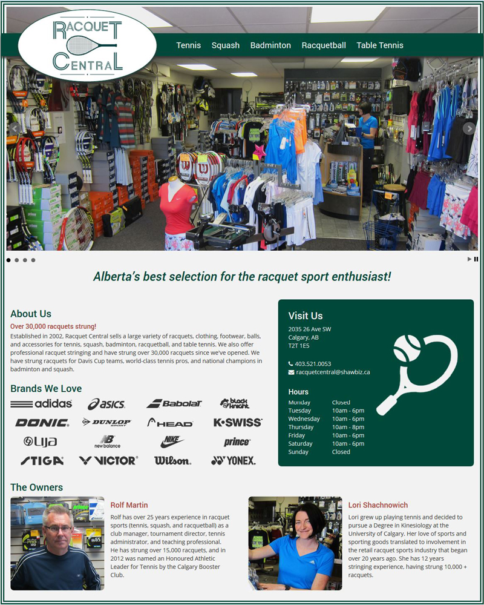Here's what the website looked like before I took it on.
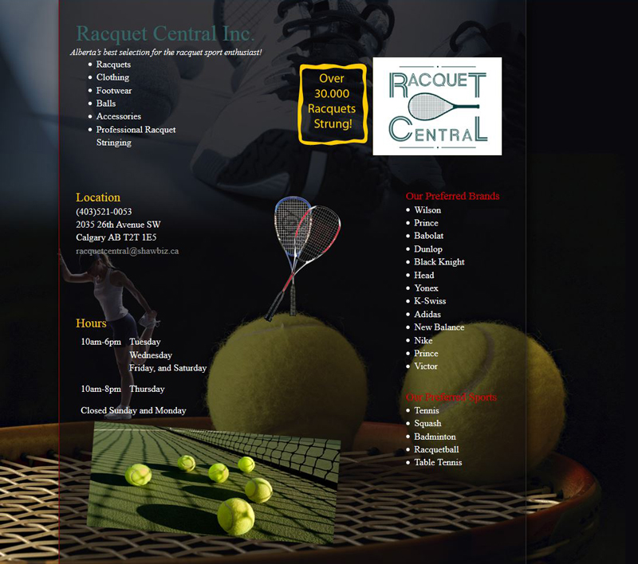 -
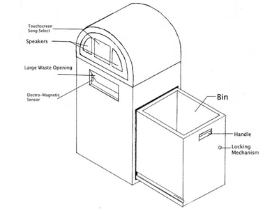
Songcycler
For our 1A design project, my team learned about the design process by designing an interactive recycling bin.
×Songcycler
In my first semester design class, we had to design a product that solved a problem while appealing to the senses (extremely broad topic, I know). My group thought it was an issue that people weren't recycling enough, especially in parks, where litter is particularly annoying. We wanted to motivate people to recycle by making it fun and entertaining. Our design was a jukebox recycling bin, named the Songcycler. When someone put a can/bottle through the flap, a screen would turn on, prompting the user to select a song to play. We thought this would be particularly good in areas where people are sitting around for a while and music is welcome, such as in parks or at bus stops.
The full powerpoint presentation can be viewed here.
After coming up with a variety of user and engineering requirements, such as being able to endure high wind speeds and 3 feet of snow, we brainstormed a variety of ideas. A few of them, drawn by Tyron Jung, are shown below.
 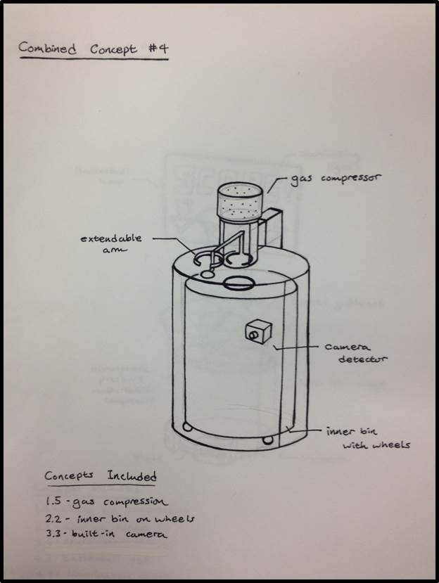
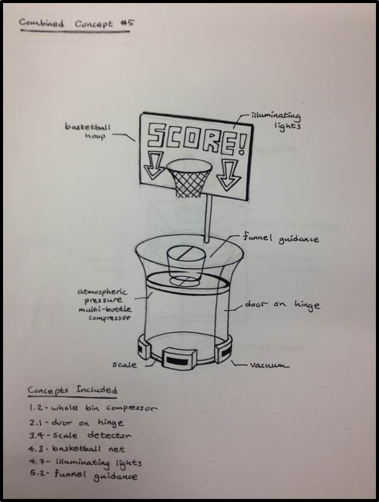
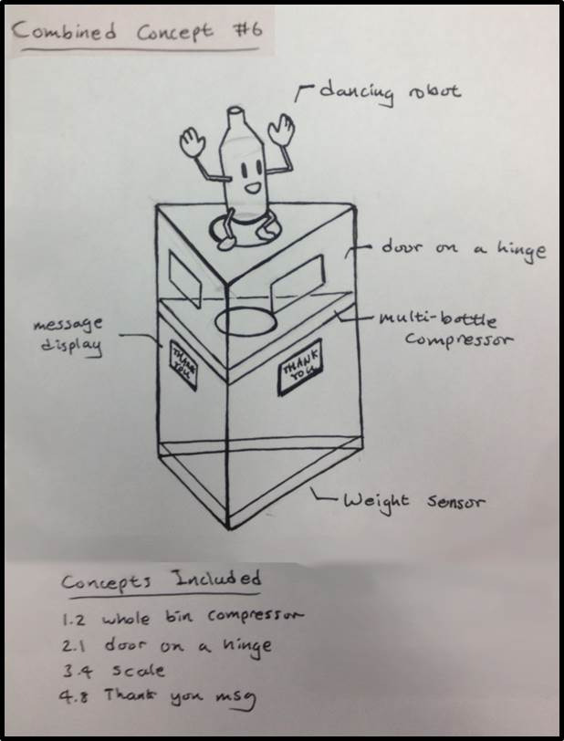
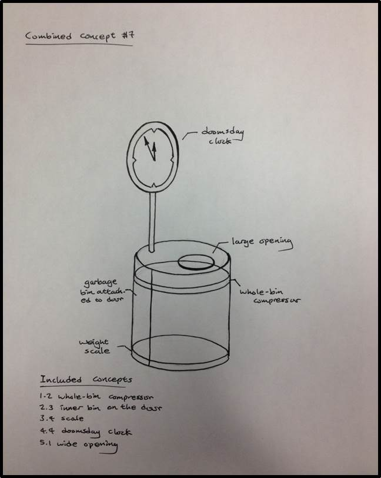
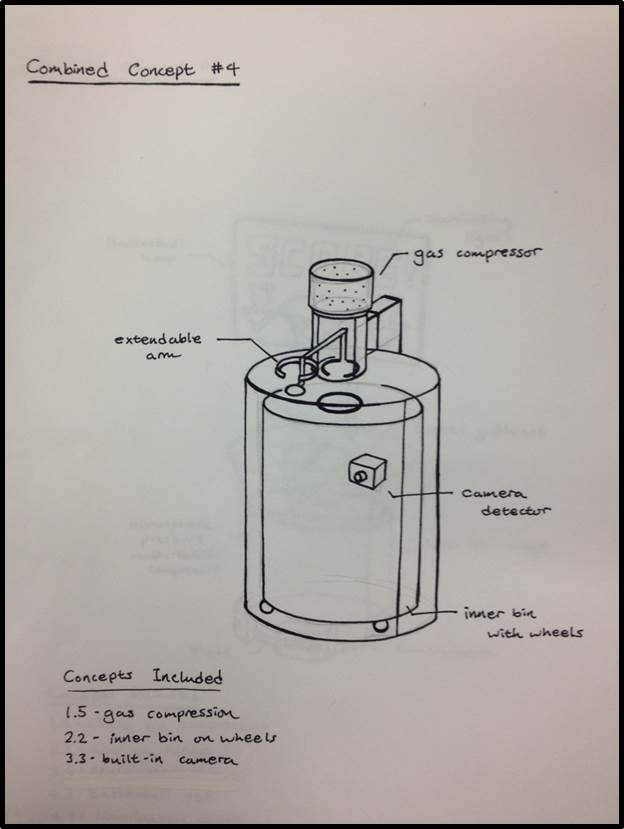
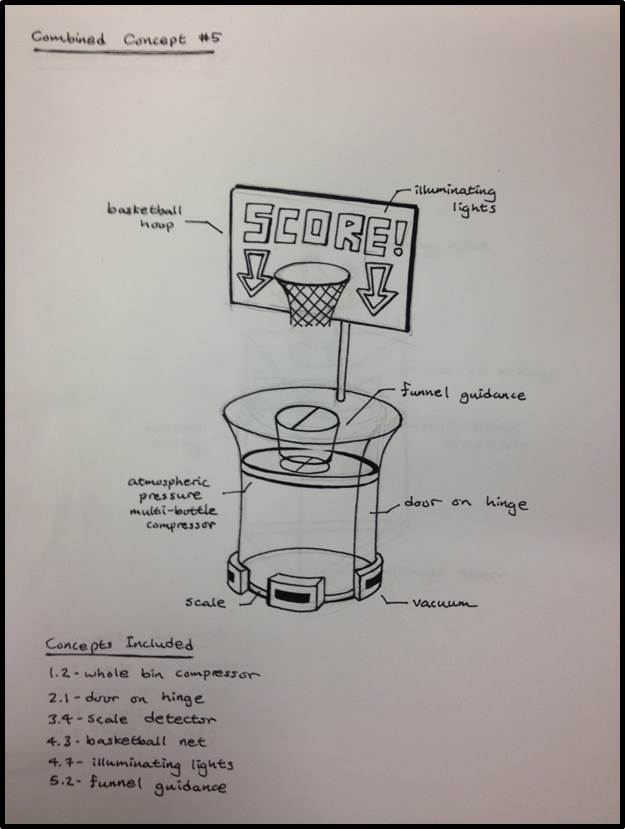
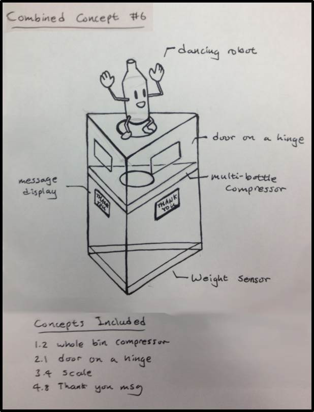
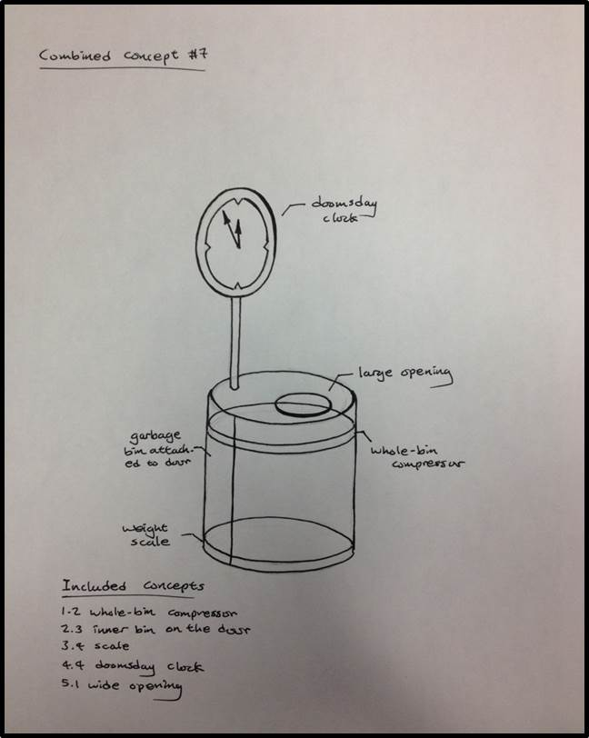
Using a decision matrix, we decided upon the jukebox design. We used analytical modelling to determine things like dimensions, energy usage, and how much force is required to use the bin (viewable in the powerpoint) and modelled the design in AutoCAD.
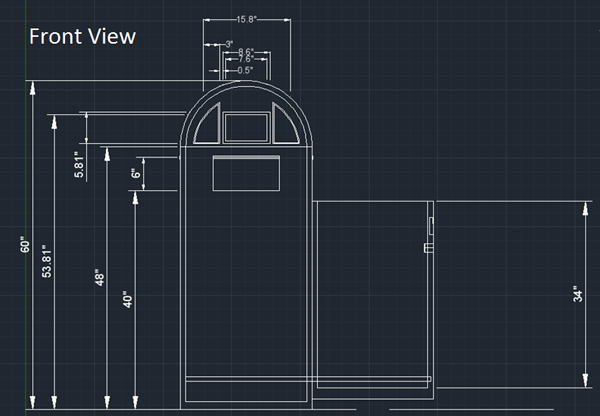 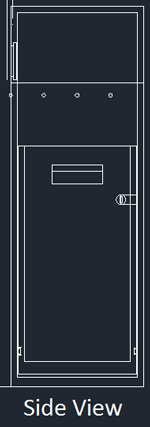 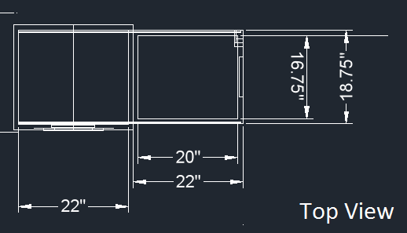We also decided on materials, designed an assembly process, conducted a failure modes and effects analysis, and thought of analytical test cases. Finally, a miniature prototype was created with our limited resources. To represent the touch screen turning on, we used wiring to turn a small lightbulb on when the flap was opened. We also fastened an iPod touch inside.
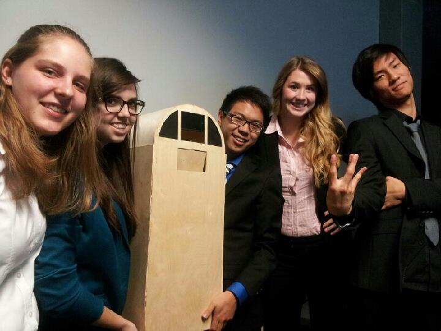 -
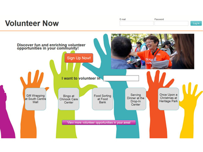
Volunteer Now
In my HCI course on Coursera, I designed a website to make it easy for users to volunteer in the community.
×Volunteer Now
I took a Human Computer Interaction course on Coursera last year. I chose to design a website for the design brief titled "Change". Currently, it's not that easy to volunteer. One usually needs to directly contact an organization they're interested in volunteering for. I designed a website where people can see volunteer opportunities in their community on a calendar and sign up on a per event basis. This enables users to get a broad volunteer experience, and work around their own schedule. The course took students through needfinding, storyboarding, wireframing, and user testing. I just made a rough prototype using Justinmind, shown below, as we weren't required to make an actual, functioning site.
The home page...
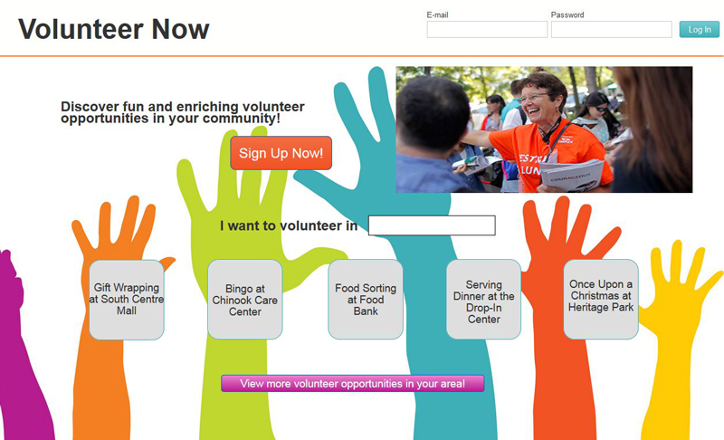The user must create a profile in order to sign up for volunteer opportunities.
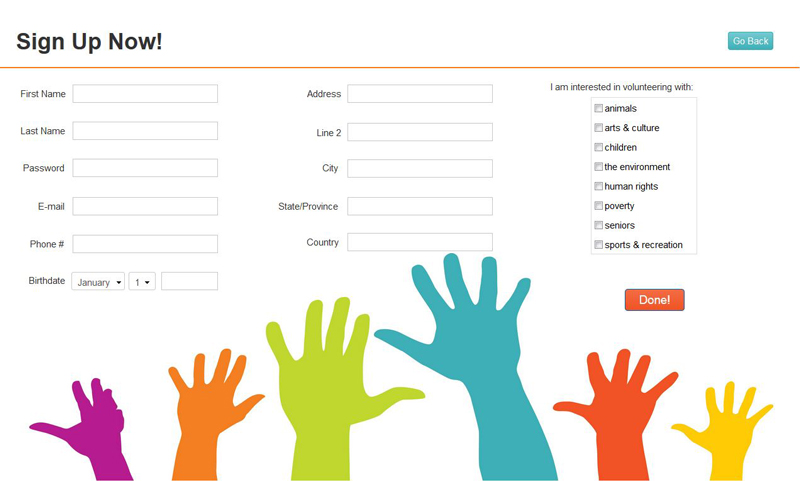Here they can see all the events they can volunteer for, color coded by type.
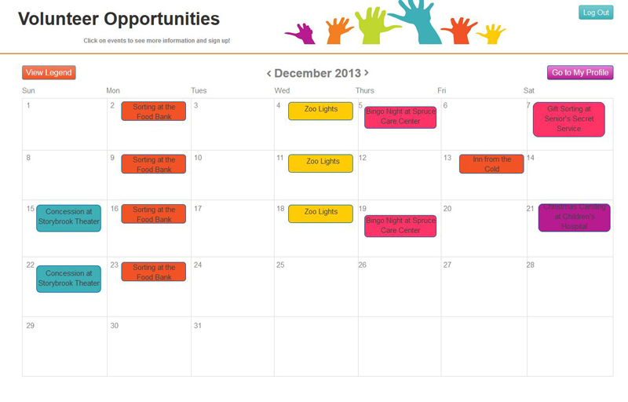Clicking on an event opens a pop up with the event info and the ability to sign up for it.
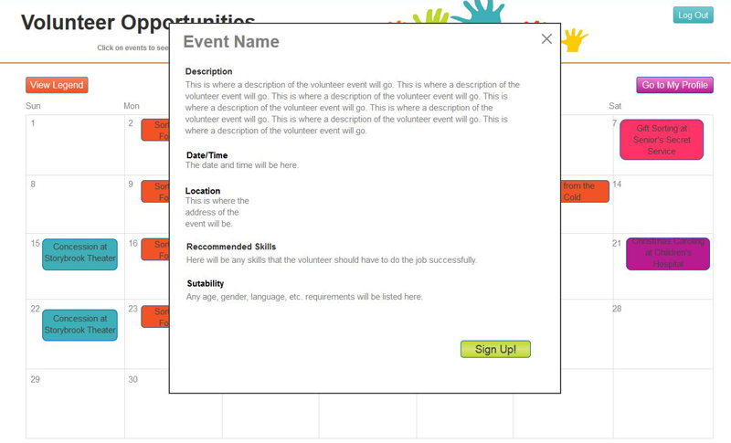All events that a user has signed up for show up on their calendar on their profile page.
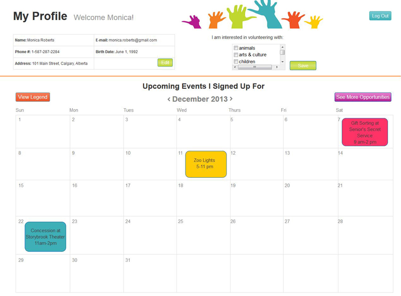
Artwork
I'm not an artist by any means, but I've dabbled here and there. I do love photography though.
-
Fiery Sunset
Taken one evening in Calgary, when the skies were unusually full of life and color.
-
London Bridge
I took this on my trip to London in 2012 of London Bridge with St. Paul's Cathedral in the background. I used an old fashioned black and white filter on my camera.
-
Flamenco Dancer
Taken at a flamenco show in Madrid, Spain.
-
Mountain Creek
A small waterfall and creek on Whitefish Mountain in Montana, taken using a slow shutter speed to make the water look fluid..
-
Girl in Shadow
A picture of Hayley Tomich taken in high school film & media class.
-
Times Square
My first night in New York City.
-
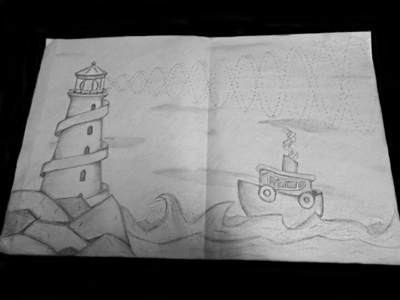
Lighthouse Helix Drawing
In my Graphics course, there was an assignment to draw a double helix in a creative way. You can see the helices in the lighthouse staircase, the lightbeam, and the smoke from the boat.
-
Gecko Drawing
This gecko was one of the drawing assignments in a high school art course.
-
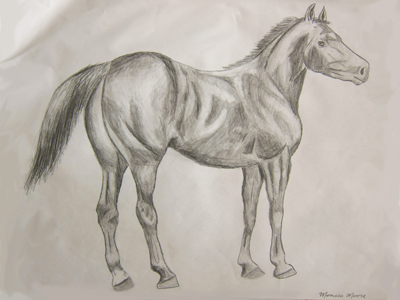
Horse Drawing
This was also assigned in a high school art class.
{kind=link}
{kind=link}
{kind=link}
{kind=link}
{kind=link}
{kind=link}
{kind=link}
{kind=link}
{kind=link}